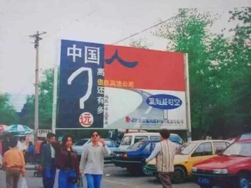
“它在于分享，而非剥夺。
在于相爱，而非交媾。”
「“互联网”也是“网”，每个端口都链接了一个真实的用户。而“文化”不是一个抽象的概念，是一个具象的内容，如视频、文字、思想和感情。一个时代的网络文化，映射的是一个社会的真实状态。」
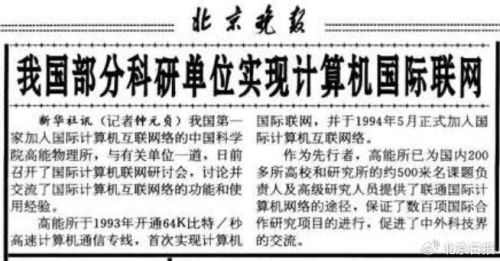
第一个使用个人生活互联网的家庭是谁？
目前无从考证。
但不会是普通家庭。
目前公认的资料显示，在1994年4月20日凌晨，中国科学院计算机网络信息中心的机房里，随着中美人员之间的电子邮件互通，中国开启全功能介入互联网的时代。
这一年，也是中国内地互联网诞生的“网络元年”。
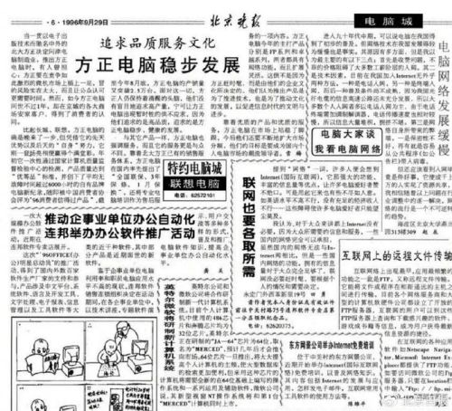
和大多数影响人类社会发展进程的科技一样，互联网（Internet）一开始作为军事用途的属性，决定了它具备区域内信息置换的特质，也让“网能铺多大”的问题回归到建网者自身的意愿上。
同样是1994年，我国部分科研单位实现了国际联网。
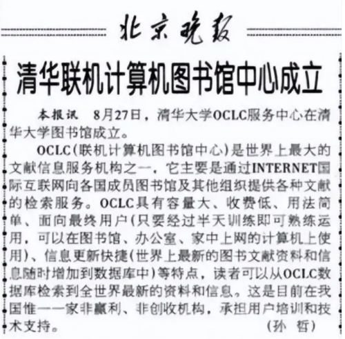
这意味着作为一名内地科研人员，可以通过网络随时实现翻阅、查找世界上任何一处可以联网的网络平台，这也是中国人最早的“冲浪”行为。
1996年8月27日，清华大学正式成立联机计算机图书馆中心，清华师生可以在此通过登录联网搜寻全世界最新的资料和信息。
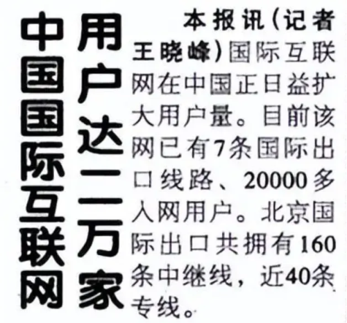
与此同时，个人入网用户也在逐渐增长。
这个阶段，互联网所展现出应有的“社交”属性愈发清晰。
同年11月13日，《北京日报》刊载《中国国际互联网用户达二万家》的消息，文中明确记载了：
“国际互联网在中国正日益扩大用户量。目前，该网已有7条国际出口线路，20000多入网用户。北京国际出口共拥有160条中继线，近40条专线。”
注意这篇短讯中的几个关键词，“国际出口线路”“20000多入网用户”“160条中继线”“近40条专线”。三十年前的报刊已经说明了当年国际互联网可以为大众共享，且有两万多用户在使用。只不过需要“拨号上网”，这个词对于现在的00后一代早已成为传说。
个人电脑、电话线等尚属于中产阶层的专属，仅北京一地，能使用网络的两万多用户的阶层属性自然不言而喻。不过他们使用网络交流的方式尚显“原始”——
1997年10月15日，《北京日报》刊登《电子函件悄然“热”了起来》，宣告北京拥有EMAIL网民已达10万之众。说明网络共享的权利已经从高尖端学术圈逐渐下放到个人生活中，彼时最早的一批网民开始检索自己感兴趣的各种信息，并尝试通过网络与国外产生联系。
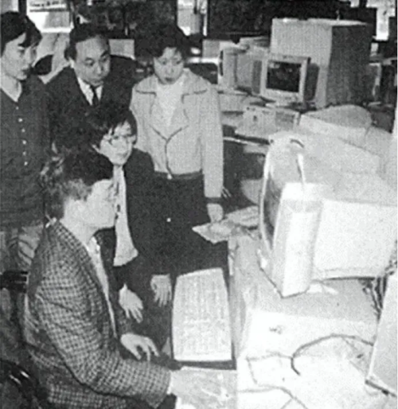
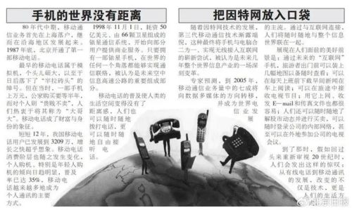
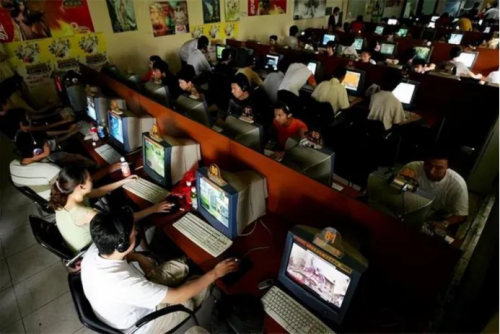
“网虫”，这个已经成为历史名词的称谓，正是1997年左右这批网民的自嘲。
而等到“信息高速公路”出现时已是千禧年（2000年）左右。
此时，随着网络从一线城市延展到四线城市，再结合当时中国城市化建设的宏大时代背景，农村人口向城镇进发，他们既是生产者，也是消费者，更是互联网潮流下的新生群体。在脱离相对广袤的农村地区后，不断膨胀的城镇居民具有了强烈的网络消费欲望，“网吧”成为大多数网民寻觅信息的唯一选择。
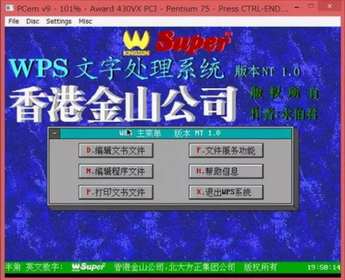
仅以2000年安徽省金寨县举例，2000年该县人口官方统计为45万人左右，县城面积不到50平方公里，县城主街区只有一条直道，从头走到尾基本上也就把县城逛完了。但该县当年各类网吧拥有量超过500家，最大的能容纳100人，最小的仅能容纳10人。
这还只是经济欠发达地区的边域一角。
其他地区自不待言。
此时，才是中国互联网潮流的正式开始。
亦是中国互联网的“古典时代”。
更是本文正文的开始。
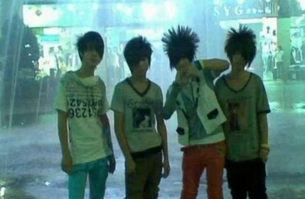
1994—2000年的“古典时代”，互联网发展的主要受众群体（主要是拥有长期上网条件的城镇人群）占全国总人口不到5%，这个新兴娱乐活动的开端如同后来许多事务发展初期的活力四射一样，追述这个时代往往是令人着迷的。
今天很多年轻网民可能无法想象一件事：
在千禧年前后，只要知悉一个网址，懂得一门外语，在国内任何一处能上网的地方找到一台电脑就能登录这个网站，无论是否是国外网站。
这种国际互联网信息冲击，对于当时刚刚接触的网民来说，其震撼不亚于1978年改革开放之初，沿海城市的人们初开茅塞时的惊讶：
“原来……竟然……啊！”
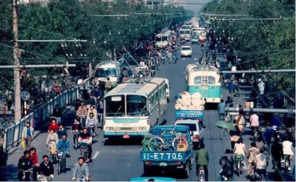
人们热切地希望通过互联网窥见这个世界，在多数国人不具备出国旅游的消费能力时，“网上冲浪”的目的有二：
一、获取外界的各种知识。
二、社交，和别人成为朋友。
第二点尤为重要。
理论上毕生居于一地的普通人首次通过互联网，可以和国内甚至国外任何一个网民建立联系。此时腾讯QQ的助力，让这种联系可以脱离EMAIL显得更加生动直接。
“网恋”，即当年社会通行的一种现象，甚至成为现代中国社会发展史上无法忽略的一篇。
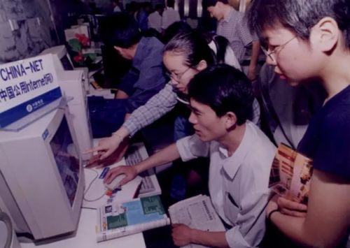
它让“初代宅”在网上拥有了谈情说爱的能力，翻阅千禧年前后的网络新闻，不难发现屡有报道异地恋人通过网络相识相知相恋，在“新闻”背后，却是中国人婚恋关系的重大突破——
相比于当时少数的异地工作者和特殊群体（如军队、国有企事业职工），普通人使用网络异地恋爱并进一步实现婚姻结合的方式，极大地刺激了互联网通信软件的发展。
当然，这种发展随着婚恋观的收拢“返古”，在后来的二十年中渐渐成了另外一种颇有争议的“寻欢”形式，但限于篇幅，暂时按下不表。
昔日成婚的“网虫”如今基本上都在五十岁以上，他们见证了中国互联网发展最初的简单和快乐：
在网上寻觅一人，对方正好愿意聊天，渐渐地发现有共同话题，然后无论上班还是上学，都会留下一个“什么时候上网？我们聊天吧！”的约定，然后，或回家或去网吧，天南海北的两个人处于互联网的两端开始长谈。
写信当笔友，交换照片，线下面基。
总体上网友见面依然秉持着1990年代前中期的单纯目的。
尤以QQ尚未推出视频功能前，对着网线另一端看不见摸不着的人，网友们会在脑海中脑补各种人设。
这种社会现象在文艺上的折射，莫过于陈小春演唱《万万没想到》里的“拨号上网，输入密码……”以及内地最知名的古早口水歌，王麟演唱的《QQ爱》：
“搜索QQ上有些留言很奇怪，男人不乖女人不爱。”
2019年，某音上还有人在讨论为什么当年《QQ爱》能红极一时，后来的《微信爱》却默默无闻？是那一批网民更重感情吗？
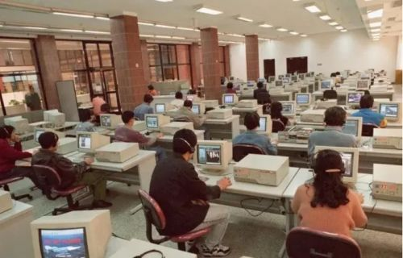
不是，我认为还是初时接触网络的单纯、文娱活动相对简单，以及可能会得罪大多数人的“少数优化论”。
这个理论在很多行业的发展周期中都有体现。
尤其是在网络平台上，当少数人使用一种沟通方式时，限于群体的狭窄属性，言论和情绪或自主或被动地收束。这也是如今许多中年网民在回忆千禧年前后上网经历时的总结：
那时的“网虫”戾气少。
这种情绪变化在中外互联网发展中都有体现，不独为国内网民专属。
彼时网民更爱以分享和沟通的形式拉近彼此的距离，其中最关键的原因是——
能经常上网的人或上得起网的人，基本家庭条件不会太差。
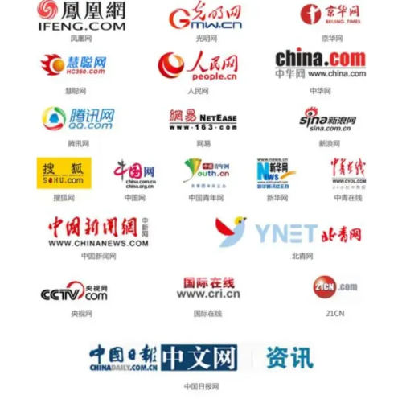
即便在本世纪初，中国很多偏远地区和农村地区依然存在大量不识字的群体，这些人受限于教育水平，使之要等到视频时代来临时才能成为后进网民。
千禧年左右的中国（内地）也正处于经济发展的时代，虽然没有像2008年之后突飞猛进，但步入小康生活，依然是一种总体趋势。
在民生变化的前提下，“话语权下沉”也始于千禧年之后。
“话语权下沉”，同样意味着随着网络发展，其承载的网络内容与对应的社会发展阶段发生了质的改变。
第一次“话语权下沉”同样发生在千禧年（2000年）初，以新浪、网易、搜狐、163在美国上市为标志性事件。
中国内地传媒的话语权首次从传统媒体（电视、广播、报刊杂志）下沉到互联网媒体。
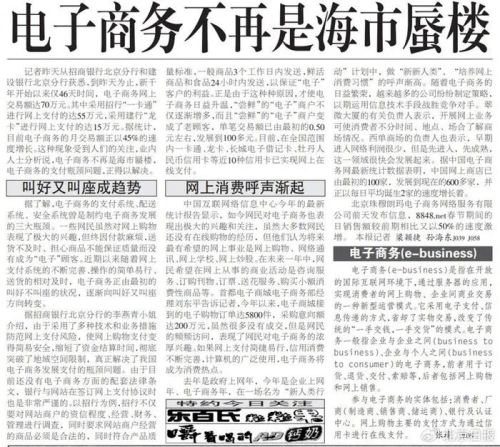
这是有益的，也便于时代发展。
至少中国内地媒体的言论风格和内容表达形式开始多样化了，人们发现在门户网站上开始有不同的声音和见解出现，接收的信息来源也从上述传统媒体逐渐转移到了互联网上。
这是一次非常值得记载的，极具意义的历史性事件。
因为在丰富网民的情感需求之外，人们更主要的还是接收外界信息，尤其是内地自己产出的各种文化信息与文化作品。
内地网站的发展，不仅仅是平台的转变，也是人们每天接受信息量开始以倍数叠加的开始。
比如2000年前，一般人们需要了解某类信息，最主要的来源是每周更新的报刊杂志和电视广播，通常一周的信息更新量在20条左右，但这个量可能只是新浪某个频道下某个版块一上午的更新量而已。
以上述网站平台为代表的BBS（论坛）文化开始发展起来，无论专业网站还是综合类网站，内地网民或原创或转载其他地方的大量时政、文化、民生、艺术、影视、情感、旅行等各方面的内容，人们在一些网站上可以浏览一天，因为信息量太大，观点庞杂。
依托于当时尚属少数的接受高等教育的网民总体素质，此时的内地互联网总体呈现精英化和多元化发展。
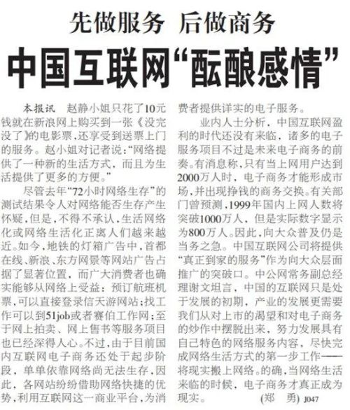
2002年，某网BBS上，一群在校大学生创作了一条短视频，视频内容以“中国人眼中的中国”为主题，把全国各地存在的或美好或丑陋的社会现象剪辑成片，旁白以英文女声作为画外音，随着画面递进，让人们看到当时处于中国内地各阶层各行业以及各种社会现象：
“这是中国……这也是中国……这是我们的中国。”
此短片于当时广为流传，让所有国内外的网民看到了中国年轻一代人对国家和社会发展的理解，更重要的是，它代表那一批大学生对未来国家建设和社会发展的向往与愿景。
于今日回看，颇为唏嘘。
同时，某网军事论坛网民发布了一则自制短视频，讲述了农民工讨薪难，不惜以死相逼的真实生存状态。网络舆论至此转向专注民生和现实生活，不再单以文化艺术交流为主。
记住2002年，距今二十二年前，这是中国内地互联网发展的涌动期。
中国内地网民从2002年开始，以每年2倍数的速度增加。
鉴于网民的暴增，互联网电子商务渐有雏形。
“先做服务，后做商务”，成为当时头部门户网站的运营准则。
“315网络大投诉”和“电子商务终端”概念从1999年酝酿，到2002年初具概念。
随后，便是web2.0革命。
中国互联网发展由古典时代进入黄金时代。
这一切，同样得益于随着教育的普及，中国内地民众普遍接受水平的逐渐提高。至少九年义务制教育，在千禧年之后才得以在大部分内地省份逐渐推广开来。
随之，就是第二次“话语权下沉”：
2005年—2011年。
第二次“话语权下沉”的标志性事件是天涯社区、凯迪社区、西祠胡同、猫扑论坛等BBS用户都达到了各自流量顶峰。
用户量的峰值意味着中国内地传媒话语权从“单位”下沉到个人，或者说普通人中的精英分子。
以天涯社区为例，许多伴生产业在诸多当年顶尖的网络文学作者不断涌现的作品中出现，如龙空等网文大拿汇聚地，庞大的网络用户享受不断推陈出新的网络文化产品，如网络文学等。这间接促使网络文学门户站也如雨后春笋般涌现。
同时，最早一批网红达人纷纷登场，如“后舍男孩”等古早时代的“颜艺”表演者们，实现了从“素人”到“红人”的转变。
这个阶段涌现出了许多网红，贡献了大量社会话题。
如芙蓉姐姐、天仙妹妹、山东二哥、罗玉凤等等，人们在网上讨论或美或丑的同时，也把话题深入到了一个关乎大多数人的问题：
普通人在网络时代如何创造个人价值？
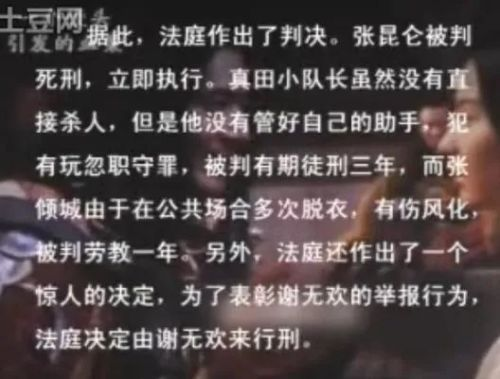
西祠胡同和猫扑论坛上，各种美食、旅游达人陆续汇聚，在讲解各自对某类文化的理解的同时，也在通过个性化的方式对一种文化现象进行二创解读。
非专业人士向专业人士挑战，普通人向艺术家叫板。
已于“黄金时代”书写了许多传奇。
最有名的，莫过于2005年电影《无极》惨遭全网吐槽后，由自由职业者胡戈在此基础上二创了《一个馒头引发的血案》。
除了制造全网轰动的效应之外，是民间“素人”对影视艺术的理解。
无论这层理解中有多少冒犯，大家都要承认一个事实：
网络舆论开始形成社会变革的推力。
这种推力一直延续到现在。
黄金时代的互联网发展呈现出几个特点：
一、资源跨平台共享，各平台之间没有形成明显的“门户”风格。
二、个人言论约束性相对较为宽松，除非触及底线。
三、观点较为繁杂，整体舆论场意见相对客观。
四、以批评、反省以往认知中的狭隘观念为主。
映射在文化层面，则是如今因“网红狼”遭遇群嘲的《狼图腾》，不过当年，这种逆向民族主义确实很有市场。
此时互联网在中国已经发展了十余年，人们在接受外界文化的冲击下，开始反思当时国家较之世界强国之间差距的原因：
有太多“为什么”需要时间来解答，可已经拥抱过世界的人转身回望，总有些意难平。
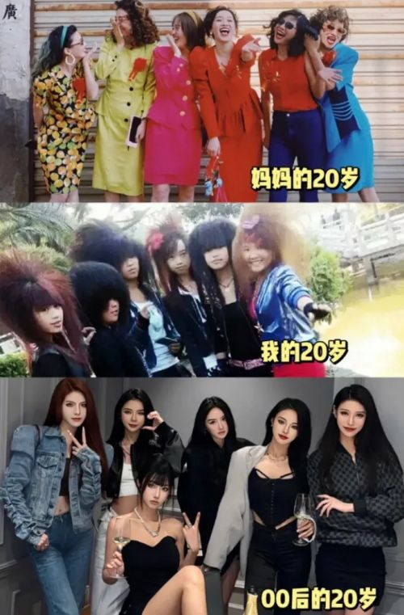
在今天看来，有些观点也许过于偏执，但对于2005-2011之间的这个时代来说，人们更愿意对社会上存在的各种负面新闻持全盘否定的态度。
在这种情况下，“公知”诞生了。
尽管这个特指名词在2015年之后一度沦为贬义，但我依然坚持认为不能以偏概全地理解“公知”这个词，毕竟在当年，能够对一些社会负面现象和粗陋习俗敢于直言，保持客观理性态度的，全靠这些“公知”。
正如天涯社区、凯迪社区、铁血社区、强国论坛等都以及时发现、大力鞭挞、犀利点评社会现象为主，相较于文艺方面的创作，“网络民主”的概念也由此形成。其中不乏网络大神（很多人至今身份成谜）对时事热点和社会未来发出种种设计。
有一说一，本世纪初，东西方各自在发展中打量彼此时，多少都对这个词有所误解。
如登上《时代》封面的李宇春，她的胜出让当时欧美媒体惊呼不已。
但显然他们也不理解中国人在不同时代呈现出的不同风貌。
如“非主流”“火星文”等，这些处于彼时互联网文化中的“低端”潮流至今也只是被调侃的对象。
真正能够对时代和社会生活产生影响的，依然是重大的改变人们固有观念的事件。
就像2008年初轰动华人圈的“艳照门”事件。
它在本文中的存在，源于一个摆不上台面的深刻影响，即——
自陈老师之后，“素人自拍”蔚然成风。甚至个别初代“网红”也以“不慎”流出不雅照作为炒作热点。
因此直到2021年左右，国家几次“清朗”，主旨依然是防微杜渐，这个“防微”有很多指向性，总体上是对于任何一种可能造成社会大规模效仿行为的担忧。这也是“劣迹”无论是否是名人还是素人，第一时间多以惩戒为主的底层逻辑。
抛开负面影响，在2008—2011年左右之前，BBS文化让“草根”正式登上历史舞台，博客BLOG（部落格）同时为网民们提供了一个可以展示自己观念，呈现个人生活的极具个性化的展示平台。它同BBS一起，对社会热点事件、影视文化作品、情感生活历程等都拥有抒发己见的热情。这个时代中，BBS和BLOG形成了良好有益的互动。
一篇博文或论坛帖文单日点击量数万，以个人观点为载体的文化元素纷纷呈现。天涯社区曾有神人用客观数据搭建模式，预言（2005年左右）中国经济将在未来五年内赶超日本。
结果还未等到网民嘲笑声褪去，随着2008年北京奥运会举行，在暂时经历了短暂的经济寒冬后，中国经济果然高歌猛进。
经济发展，推动了文化产业等三产的发展。
上文中“先做服务，后做商务”逐渐落实。
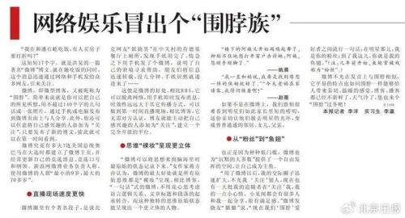
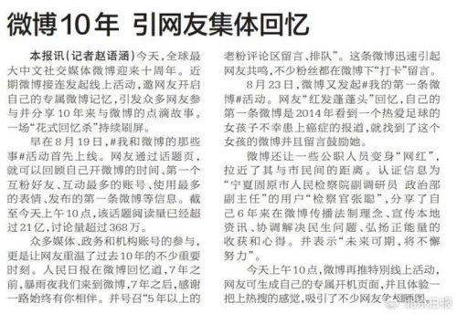
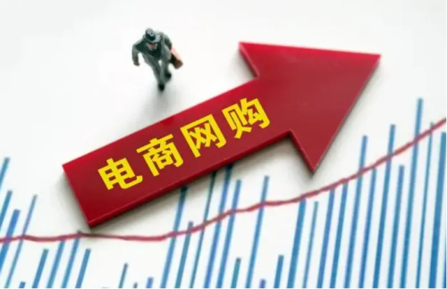
电子商务产业于黄金时代迅速积累原始资金，不断吸纳外部投入，现实中影视行业最依赖的煤老板们随着国家政策的收拢渐渐退出，互联网金融大佬和房地产NEW MONEY等纷纷登场。
他们眼中，互联网依然是一块可以不断掘金的风水宝地。
因为截止2008年6月30日，中国内地网民规模达到2.53亿，首次跃居世界第一。
视频网站类如某酷某豆和某艺等，也在经历了发展初期的混乱无序后，果断选择了专业化产品制造为主的道路，开始精心打造商业化产品，如短视频、影视剧等。综合类和专业类网站纷纷入局视频赛道，吸纳广告商加入盈利模式，电视和平媒开始进入“寒冬”。
这个时代也是内地互联网内容价值最高的年代，主要在于言论及产品、观点的较为自由的输出。
它源于占据绝对优势的庞大“素人”网民对传统把持话语权的平台的冲击。
假如回到2007年，一位音乐发烧友想听一些英文歌曲，进入天涯社区-音乐版块，搜索“英文歌”三个字，可以看到那种真的听了20年左右英文歌的达人，认真总结优质的200首英文歌曲以及出处、特点和歌手故事。而传媒单位的“榜单”质量反而不如达人推荐。
这就好比现在国内某些权威影视奖项推荐的片（剧）单，拼不过民间素人影视UP主的推荐，信息制约、平台制约等因素使之与普罗大众的真实感受渐渐脱离，不如素人主义直接且真实。
微博这一新兴舆论平台诞生更在提供舆论场风向的主导性，此后各个官媒和名人明星在微博上创建账号，网民们也纷纷涌入。此时一个关乎互联网发展的重要科技产品出现——
2011年，智能手机出现了。
微信，登上历史舞台。
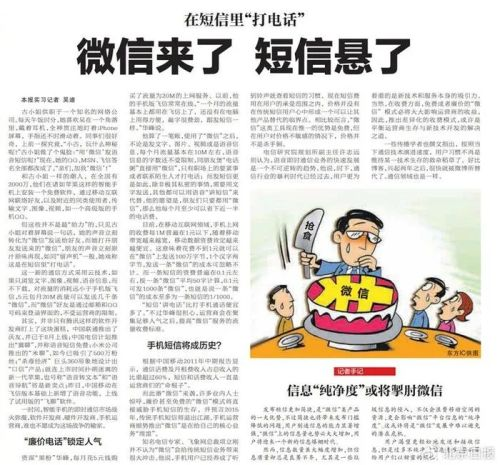
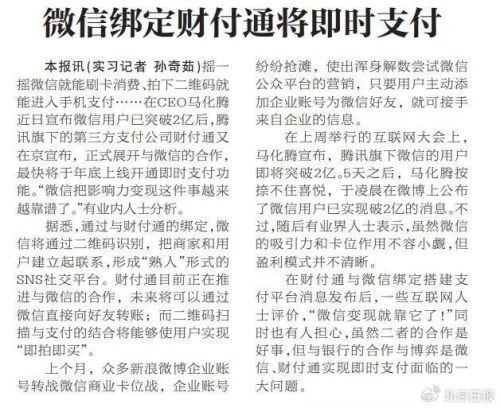
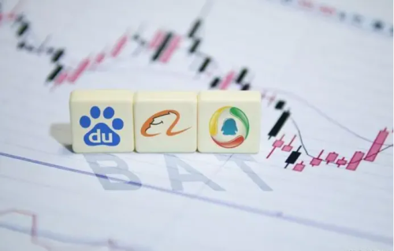
到了2012年6月底，我国手机网民规模达到3.88亿，手机首次超越台式（笔记本）电脑，成为中国内地网民第一大上网终端。
随着智能手机的普及，意味着大量处于社会中底阶层的民众，可以随时随地拥有在网络上发表视讯、言论的能力。
至此，互联网黄金时代进入尾声。
开始了第三次“话语权下沉”：
2013年至今。
除了网民素质整体下沉外，第三次“下沉”更像是一种“内容减半”。
因为各种显而易见的原因，以及对第二次“话语权下沉”的某种纠正，在2013年至今的几年时间内，大量民间原创文化产品消失了。
最明显的便是通过集约化发展各类APP，使得各种平台或主动或被动地选择放弃流量渐少的“老”渠道，如BLOG的集体消失，还有全网关注的“天涯社区关闭”事件。
客观地说，随着科技进步及用户兴趣点迭代，尤其是智能手机的普及，传统BBS和门户网站显然已经不具备适应用户使用习惯的特征，此前那种发表观点和作品必须在台式（笔记本）电脑上操作的特质，也无法适应愈发追求快速消费的用户需求。
不止是上述平台，电子邮件和其他通讯工具，也从繁陈归于统一。
昔日存在过的HOTMAIL、MSN、开心网等在经过用户迭代和时代选择中渐渐退出内地网民的使用习惯， QQ和微信成为大多数网民完成“社交”属性的最直接选择。
即便是在网络其他平台结识的朋友，其最终落地社交渠道，也基本归于两种通讯软件。
基于这种庞大的习惯，电子商务的执行渠道，即移动支付端开通。
网购，进入千家万户。
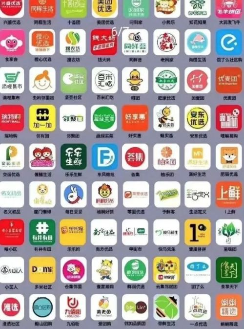
同时，在错过了一轮轮热投风潮后，曾经伴随一代网民记忆的BBS等，因为不适应新时代的消费特性成为资本市场丢弃的文化产品。
是的，资本市场。
当资本市场追逐庞大用户体量的同时，也在选择用户的消费和使用习惯。
如果BBS和BLOG能够完整消化各类网络金融产品的话，那么就可以继续生存发展。
但遗憾的是，“黄金时代”盛行的分享主义在市场经济中逐渐显出疲态——
在众多文化产品涌现的同时，需要人为地做出板块切割。
广告和电子商务如何植入上述平台？
如何让崇尚自由主义者的文创产品拜倒在资本面前？
如何将浏览量转化为有效消费数据？
显然，各类APP软件更具备金融产品的消费属性。
在这些APP中，无论用户消费习惯如何，所属阶层如何，调动网民将其转化为产品消费者才是唯一的目的。
所以如果你足够细心的话，会发现在2012年之后，不仅APP成为智能手机上必需的下载软件，各类消费趋势和文化产品的有针对性的投放也成为“黄金时代”末期的潮流。
在这场潮流中，大多数网民无意识地进入了消费体验的狂欢。
无论是性别对立、暴爽网文、医美塑形、美食探索，乃至关于意识形态等的内容产出，都在指向消费终端——
即迎合暂时的用户爽感。
至于认真记录的生活点滴和专业性较强的文化作品，乃至个人意识强烈的文章观点，统统都要面对两种选择：
要么迎合潮流，要么闭门自嗨。
然而使用和维护是两回事。
尤其是大量诞生在黄金时代甚至古典时代的互联网素人作品的消失，对于年轻网民而言，直接造成了一种“记忆缺失”，或是“记忆断代”。
比如95后-00后对BBS和BLOG时代发生的众多大事件的观点承袭发生断裂，比如00后对上个时代中产出的一些网络文化的认知断层。
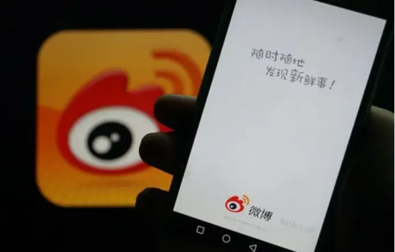
如曾经在2011年左右红遍全网的神文《沙县小吃开遍全国的震撼真相》，随着它的始发站和转载站的陆续关闭，以及在彼时看来纯属调侃恶搞，如今“略显”不妥的内容，再次搜寻全文难度很大。
而不少人则第一时间看中商机，在某宝某鱼上打包售卖天涯神贴，将其精华帖文件转移到个人用户独享的状态，使许多原本可以流传下来的关于时代变迁的见证记录，处于愈发狭隘的尴尬境地。
对于广大的BLOG用户而言，随着各大门户网站不声不响地停止维护，其过往十几年的生活点滴分享和时事锐评、文化分享等泯然于世间。
这种情况造成了内地互联网“偏执”浓度大大增加。
尤其是2015年之后，内地互联网氛围发生了剧烈变化，个人言论载体如微博等平台账号，成批地消失，此类日常行为导致人们将注意力逐渐转移到也许原本不该过分关注的领域，如：娱乐至死和性放纵。
今天我们仍能看到的许多APP社交软件，其发展初期基本上都保留了“交友”属性。
随着中国内地社会经济结构发生的变化，以及人口大量涌入一二线城市的发展趋势，人们不再执迷于“云淡风轻”的生活，在平台上展示真实的自我。
更多的时候，社交形象是经过精心包装的一种姿态。
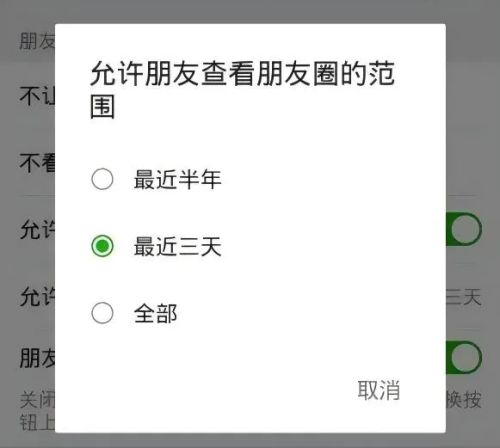
而越来越多的人，鉴于网络舆论环境的变化，选择朋友圈“三天可见”。
至于微博……
曾热闹非凡的名人骂战消失了，大家都集中在“下沉”个人生活（包装过的）和商业行为的展示上。
主观上，互联网获得了一种显见的公序良俗。
客观上，也得到了一个明显滞后的信息茧房。
即——
我不知你，你不知我。
随着隔阂的设置，同1994年到千禧年左右相比，此时的互联网难产跨越时代的文化产品。
如影视和各类文化作品。
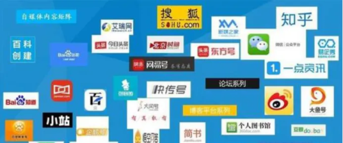
这直接导致了第四次，也是最严重的一次“话语权下沉”。
即2019年以某手成为春晚第一赞助商的标志性事件。
它代表话语权两极分化，要么作为自说自话的沉迷其中，要么作为低智或假装低智的流俗产品，内地互联网至此进入“二极管时代”。
如今的互联网让很多人在不自觉中降智，尤其是喜欢玩梗的小鬼头，习惯通过一句话、一个标签、一张图片、一个短视频来认识别人和别的国家。
比如提到法国，很多人喜欢玩投降梗，提到美国，喜欢玩石油梗，提到日本则喜欢玩核废水梗，但不止是国内网民如此，外网也一样。那么老外怎么玩中国（内地）的梗呢？他们一般会评论：
+100社会信用。
这些和以上那几个刻板印象差不多，有可能发生过这样的事，但不是普遍现象，也可能完全是杜撰的，不过真假不重要，重要的是有梗可玩。
对于仍处于大多数的底层网民而言，“梗”才是他们快速进行社交的有效沟通方式。
一如2009年曾被批评的“网络十大神兽”，如“草泥马”“尾生鲸”等。
大家都知道这是低俗网络文化的产物，但用户众多。
那么“YYDS”和“AWSL”等算不算不正经的语言沟通方式呢？
我想，一句“CITY不CITY啊？”足以诠释在潮流面前，一切既定原则都可以调整。
同样，在“二极管时代”，让那些喜欢标签化的人越来越充满偏见，往往从一个极端跳到另外一个极端。
所以置于某部电影和电视剧，两年前的舆论场意见和两年后的舆论场意见几乎像是两个平行空间的交流。
这种强烈反差在公众人物身上也有体现。
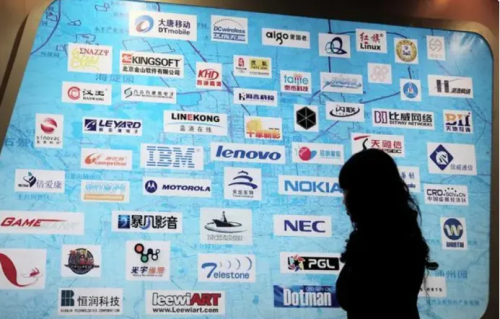
较有代表性的是对于张桂梅老师的网络舆论。
如果在某乎上查阅2021年到2024年之间，内地网民对张桂梅的人物评价，会发现在同一个问题下，时隔不到三年，对一个人的评价竟如此两极分化。
有着同样境遇的还有六小龄童老师，在以联合国官方微博为代表的“两开花”之后，则是网民对其人设的全面翻盘。
简而言之，以上述人物的网络舆论风向转变为例，可以看出客观、理性的作品观点和言论立场越发少见，鲜有对一件事情和一个人物做出客观评价的行为。
新时代的小鬼头们更愿意在交流之前陷入主观臆想的状态，然后动辄扣上一顶“帽子”，并继续在“抛开事实不谈”的基础上进行骂战。
解析这种舆论环境的变化，不如直接将视线从网络暂时抽离进入现实：
社会生活节奏加快、阶层跨越难度增大、婚恋观崩坍以及传统家庭结构的变化，以及经济生活和社会发展的转折等，都是网络戾气宣泄的理由。
不客气地说，当文化下沉到底端时，文化本身已经失去了其意义和价值，而脱离文化之外的人身攻击和网络戾气开始喧宾夺主，成为众多社会性话题的舆论焦点。
这是一个客观的事实。
在此不便一一举例。
我只能大致总结流量的驱动性，促使许多目前已有的平台选择向低质化产品产出的方向发展，且这种情况还要持续很长一段时间。
同时，信息分享的互联网精神也在逐渐变质，各种收费内容逐年增加，广告商的见缝插针也已渗透到了某站上的UP主，网民对此冠以“恰饭”的笑谈。
国外也存在这种迎合低端认知创造流俗文化的现象，在许多欧美日韩博主的个人主页上，同样标注了广告植入的时长和合作方式。
而产出的观点和产品，也以主要用户的喜好为基准。
那么谁是主要用户呢？
比如一个APP，10000个用户中大多数网民的阶层属性决定了其产品的生产特质，分享内容也根据用户喜好选择从众还是“保持节操”。
可惜同二十多年前的互联网用户相比，中外网民都在追求短期内片刻的“颅内高潮”。
也就是“娱乐至死”。
任何严肃的，值得讨论的社会事件和文化作品，都不得不依从大部分网民的趣味倾向重新梳理。
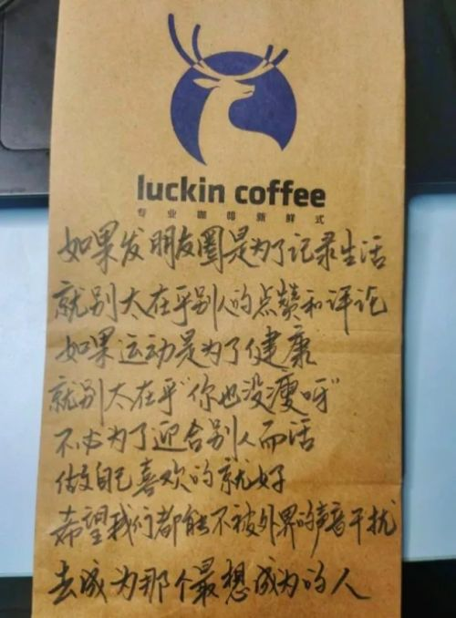
粉丝经济、“她”经济、共享经济、元宇宙……
2015年之后地互联网尽管少了熟悉的面孔，依然无意中依附在世界网络发展趋势中，形成一个又一个短期热度较高的产品。
如今勉力保持网络互助精神的，尚存贴吧：
“为什么现在还有人上贴吧？”
“因为贴吧里真的有王祖贤。”
这是关于贴吧依然硬挺于现今的最好注释。
它是“古代”互联网的遗存，也是为数不多的还有很多网民自发的、平等互助的平台。贴吧的奇特之处在于任何时候，都可以在此找到相应的生活诉求。不少贴吧的管理员也大多保持BBS时代的“斑竹”（版主）作风，及时管理并分享相关专业内容。
像极了互联网刚开始发展时的样子……
2002年的某个深夜，我在网络上浏览到一个网站。
这个网站名字很特别，叫“最是文人不自由”。
初次点开网站后，我被其中充斥的各种观点、各种文章震撼。
基本上可以在这上面找到很多网民对古今中外的历史事件、社会现象以及文化趋势预测的评判，中间杂以民间怪谈和科学幻想等内容。
可惜当年没有预判到互联网发展的现状，因此没有在二十二年前就保留文章。
各种脑洞大开，无所顾忌的想象力和观点在互联网“黄金时代”开始时，才是人们趋于追求知识的主要动力。
在网络社交中进步、融合、提升，秉承不同观点的争论，不轻易下定论。
同时，仰望某些大神的专业性论述，追寻过去的神话对应现实。
尽管遗憾地说，如天涯社区、猫扑论坛和西祠胡同等一批BBS的没落与消失是大势所趋，但“思想”和“过去”不该被遗忘。一如曾经出现过的YAHOO和GOOGLE。
因此写到《内地互联网三十年》这个话题，很难用简单的观点来评价如今互联网文化的发展现状，它是现实中时事热点、娱乐时评和影视音乐流行的网络折射，也是不同时代网民在所处时代的精神面貌。
三十年间，内地网民达到10.92亿人（2023年年终统计数据），互联网普及率达77.5%。这批网民所处的互联网时代，多以短期快乐，长期无感的文化消费特征为主。
比如短视频，在极短的时间内通过不得不凸显的哗众取宠的效果赢得流量，是不得不采纳的产出原则。
我无意评价这种趋势的好坏，但七秒之后，它是否还存在？
或者说，关于它的记忆是否还存在？
2023年，某站短视频中，日本AV男优东尼大木模仿周杰伦在东南某地商演，商演主题叫“木已成周”……
而重温周杰伦MV《我的地盘》时，可以看到动感地带的广告和“复古”的滑盖手机。
也许时尚和流行只是在不同时代通过不同的解读保留了下来。
只是对于依然对过去时代存有记忆的人来说，“娱乐至死”并不是一个好的选择。
如现在一直会被网民吐槽或惨遭下架的各种逆天微短剧，和愈发同质化的各种类型的影视剧一样。
这是一个崇尚个性的时代，也是一个遮掩真实面目的时代。
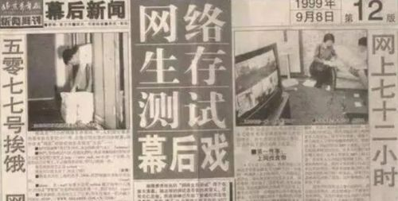
起码，我已经很少再看到个人社交平台上那种真切的情感展示，并且……
我几乎不再拥有另一个人所有的社交平台账号了。
我对别人也一样。
大家，都在这个时代谨慎地、刻意地、紧张地保持着“松弛感”。
那么允许或不允许这些行为存在，在这个时代是一个难以言表的命题。
如同我在写到这个时代时，必须省略一些原因一样：
“互联网”也是“网”，每个端口都链接了一个真实的用户。
“文化”更不是一个抽象的概念，是一个具象的内容，如视频、文字、思想和感情。
一个时代的网络文化，映射的是一个社会的真实状态。
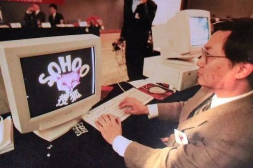
假使回到1994年，第一个使用互联网的个人用户一定不是普通人。
他（她）第一次接触网络时，面对整个世界，应该是兴奋且充满活力的。
他（她）第一时间想到的肯定不是把现实戾气和欲望毫无顾虑地发泄到网上，而是带着一种敬畏和仰望的心情如饥似渴地拥抱整个世界。
一如我们这一群人始终都在致力于通过何种文化产品和行业趋势，乃至个人观点尝试对这个世界做出尽可能宽泛的理解。
允许不同的，甚至对立的观点和人物同时存在于这个平台上。
但我们终究只是这个网络上的一小部分。
我不愿意称这种情态为“互联网原教旨主义”。
因为这本该是互联网文化应有的样子。
它在于分享，而非剥夺。在于相爱，而非交媾。
谨记尼尔波兹曼在《娱乐至死》中阐述的一段话，算是本文对一个无法言表的时代的结语：
“娱乐至死的可怕之处不在于娱乐本身，而在于人们日渐失去对社会事务进行严肃思考和理智判断的能力，在于被轻佻的文化环境养成了既无知且无畏的理性文盲而不自知”。